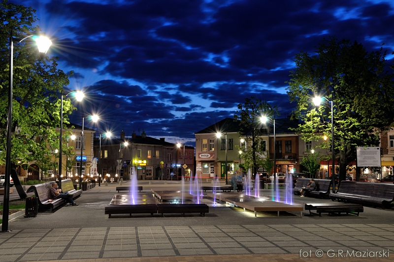

PHP5
O mnie
Nazywam się Radosław Przebieglec, a ta strona zawiera podstawowe informacje o mnie.
Serdecznie zapraszam do zapoznania się z jej treścią, szczególnie z Kompetencjami oraz Portfolio.
W razie pytań proszę o Kontakt.
Pamiętaj, iż twoja własna determinacja, by osiągnąć sukces, liczy się bardziej, niż cokolwiek innego na świecie.
Abraham Lincoln

Pochodzenie
Urodziłem się w Mielcu, w którym spędziłem pierwsze lata swojego życia. Miasto to leży w województwie podkarpackim w pobliżu Rzeszowa, Tarnowa czy Dębicy. Przepływa przez nie rzeka Wisłoka.
Obecnie Mielec jest miastem bardzo dynamicznie rozwijającym się. Widać to głównie po dobrze funkcjonującej Specjalnej Strefie Ekonomicznej, czy też po ostatnich inwestycjach w estetykę miasta.
Wykształcenie
Pierwsze stopnie edukacji zdobywałem w Szkole Podstawowej nr 3, następnie w Gimnazjum nr 2. Kolejną szkołą było Liceum Ogólnokształcące nr 2. Uczęszczałem do klasy o profilu matematyczno-fizycznym.
Obecnie jestem studentem Akademii Górniczo-Hutniczej w Krakowie. W 2013 roku zdobyłem tytuł inżyniera na kierunku Automatyka i Robotyka.
Praca magisterska
Wpływ układu stron internetowych na ich odbiór i użyteczność.
Impact of web pages layout on their perceivability and usability.
Zainteresowania
Uwielbiam spacerować po górach, pod tym względem szczególnie upatrzyłem sobie polskie Tatry.
W latach 2009 - 2013 byłem członkiem chóru AGH Con Fuoco.
Wolne chwile lubię spędzać równiez na oglądaniu meczów piłkarskich.
Doświadczenie
Jestem u początku swojej kariery zawodowej. Poniżej można prześledzić moje dotychczasowe poczynania na rynku pracy.
Comarch
Wrzesień 2012 - obecnie
Obecnie jestem pracownikiem działu Research & Development (Comarch Zdrowie) w Comarch. Pracuję jako inżynier oprogramowania oraz analityk. Na co dzień do czynienia mam z projektami z branży medycznej, a w szczególności z protokołem DICOM.
Freelancer
Początek 2012 - obecnie
W wolnych chwilach poszukuję zleceń wykonania stron internetowych. Do tej pory wykonałem na zlecenie trzy strony wraz ze sterującymi nimi Panelami Administracyjnymi. W miarę możliwości nadal poszukuję ciekawych projektów, aby nieustannie pogłębiać wiedzę oraz umiejętności.
iMed24
Lipiec 2012 - Wrzesień 2012
Karierę zawodową zacząłęm dzięki programowi stażowemu w Comarch. Dzięki niemu zostałem włączony do zespołu iMed24, w którym zajmowałem stanowisko inżyniera oprogramowania. Staż ten był spędzony bardzo intensywnie, a w jego trakcie zajmowałem się projektami z branży medycznej, w szczególności protokołem DICOM. Po zakończeniu stażu otrzymałem ofertę przedłużenia współpracy w Comarch.
Umiejętności
W stopniu zaawansowanym porozumiewam się w języku angielskim (poziom C1, certyfikat B2). Dodatkowo pracuję nad językiem niemieckim, którego znajomość oceniam na poziom B1.
W trakcie studiów, pracy oraz samokształcenia nabyłem wiele umiejętności. Poniżej wypisane są tylko te technologie, w których czuję się najlepiej.
HTML5, CSS3
TypeScript
JavaScript
Zend Framework
C#
.NET
PostgreSQL
Portfolio
Poniżej można znaleźć strony internetowe, które wykonałem do tej pory.
{kind=link}
{kind=link}
{kind=link}
Kontakt
Jeżeli chcesz się ze mną skontaktować, wypełnij formularz poniżej. Odpowiedź powinna przyjść w ciągu kilku dni.
Tymczasowo formularz kontaktowy jest niedostępny. Proszę o kontakt na adres e-mail: r.przebieglec@gmail.com